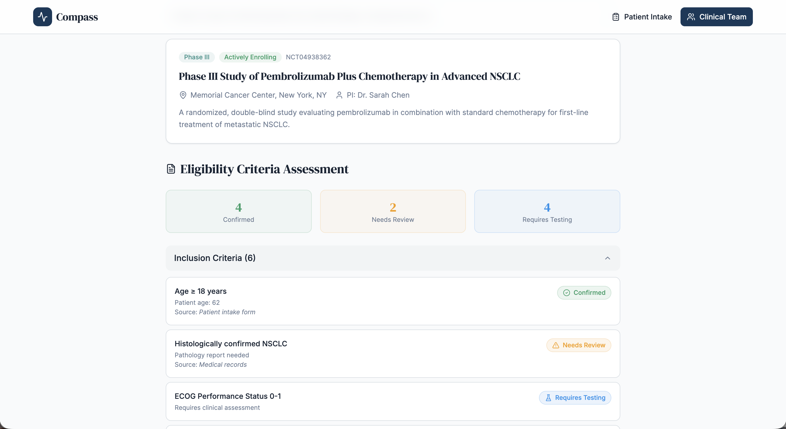
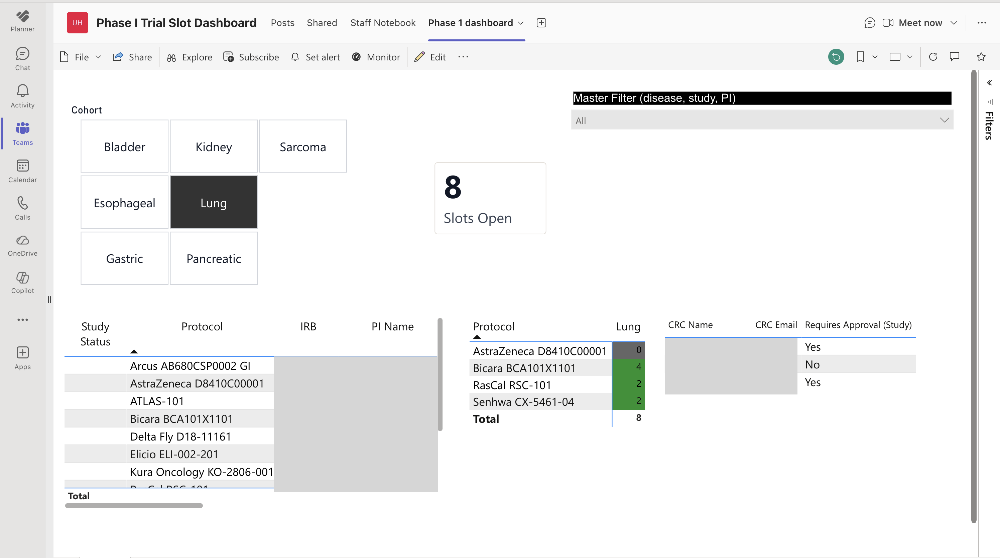
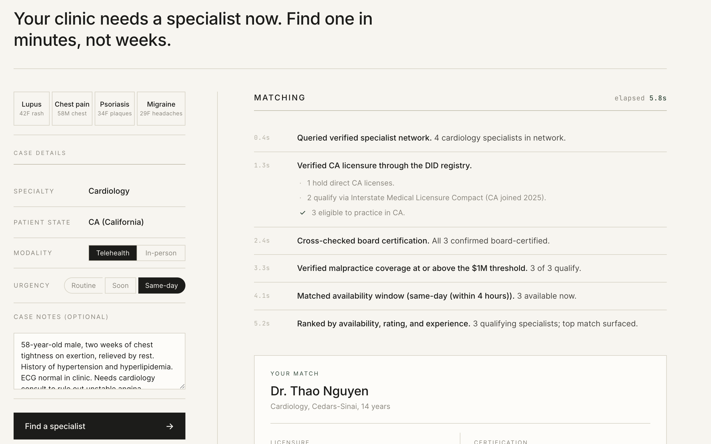
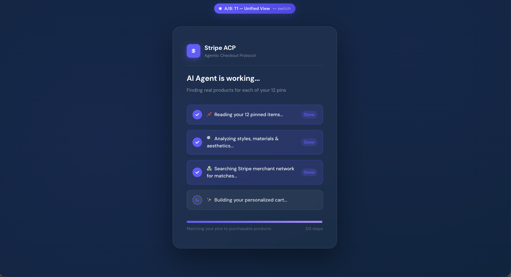
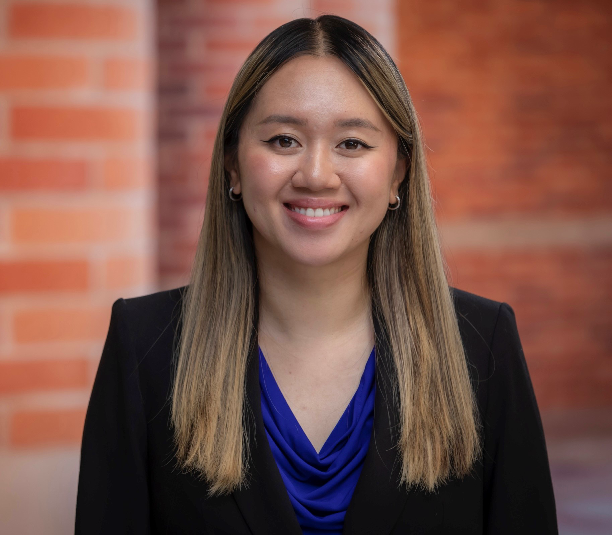

Designer & Builder
I'm Cindy. I build things across healthcare, AI, and product. I'm most interested in how technology, designed thoughtfully, can create real outcomes for the people who need it most.
See the work →




I'm Cindy. I build things across healthcare, AI, and product, sometimes alone, sometimes with people I trust. My projects range from clinical ops tools prototyped in real hospital settings to consumer-facing apps exploring what agentic AI can do.
What stays constant is the intentionality behind every decision. I think carefully about the person on the other end, the care coordinator who needs the right information in three seconds, the patient navigating a system that wasn't designed for them, the shopper whose trust an AI agent has to earn before it acts on their behalf. I keep iterating until it feels right.
I'm drawn to problems that live across disciplines, where clinical rigor and product thinking have to coexist. That tension is where I do my best work.